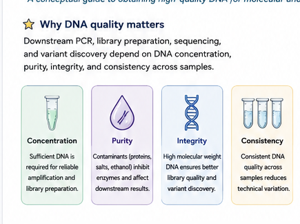
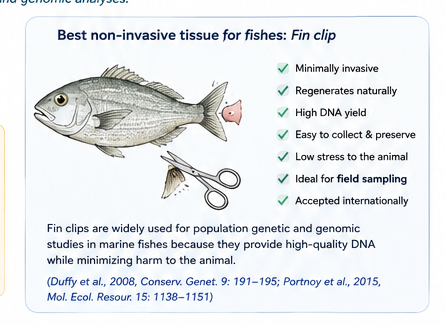
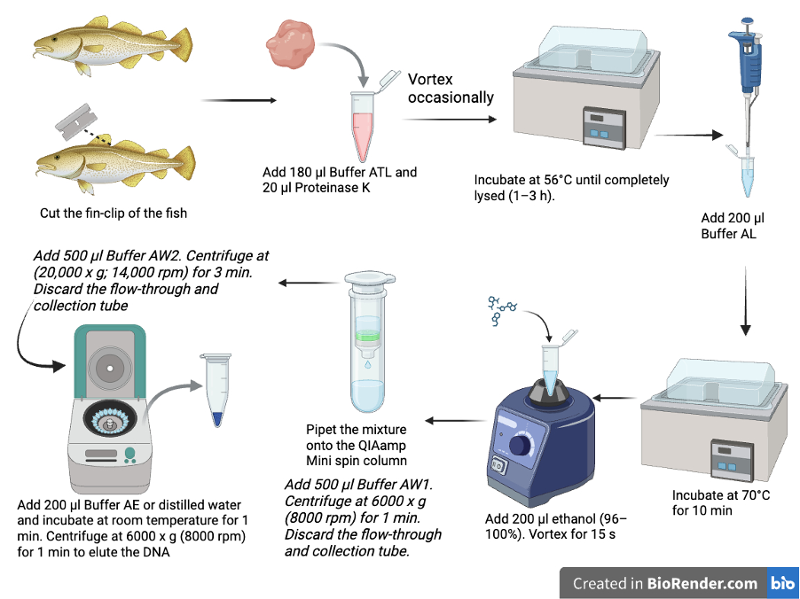
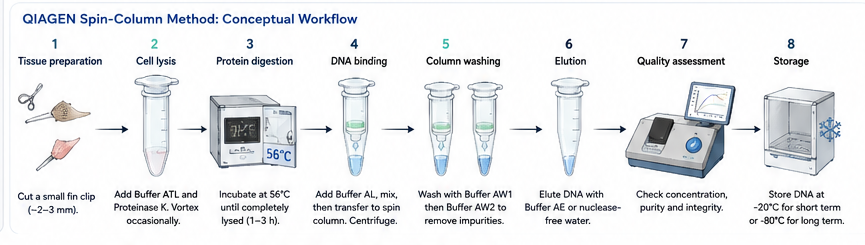
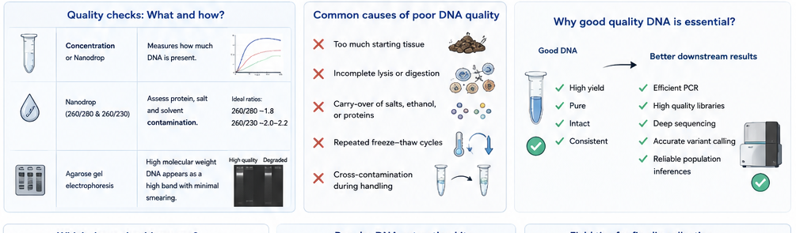

Concentration
Enough double-stranded DNA must be available for the intended assay. A concentration that is adequate for PCR may still be insufficient for a sequencing library.
Learning Hub · Molecular Methods
A detailed conceptual guide to collecting fish tissue, isolating genomic DNA, evaluating quality, and preparing consistent samples for PCR, library preparation, sequencing, and population-genomic analysis.
Chapter overview
DNA extraction is not merely a preparatory step. The concentration, purity, integrity, and consistency of the recovered DNA influence every downstream stage. Restriction digestion, PCR, library preparation, sequencing depth, read quality, and variant discovery can all be affected by poor or uneven starting material.

Enough double-stranded DNA must be available for the intended assay. A concentration that is adequate for PCR may still be insufficient for a sequencing library.
Proteins, salts, ethanol, phenol, detergents, and other carry-over contaminants may inhibit polymerases or restriction enzymes.
High-molecular-weight DNA is less fragmented and usually supports more even library preparation and reliable downstream analysis.
Samples should be processed as uniformly as possible. Uneven extraction quality can create technical variation that resembles biological variation.
Fish sampling

Fin tissue is widely used in fish population genetics because a small clip can provide reliable genomic DNA while allowing the animal to survive when sampling is performed under approved animal-care procedures. Earlier work demonstrated that fins and scales can support efficient non-destructive genetic sampling, and recent whole-genome sequencing comparisons found fin clips to be more consistently suitable for sequencing than untreated skin or gill swabs.
However, “best” depends on the research question, species, animal size, welfare requirements, permits, and downstream method. For small-bodied or sensitive species, skin-mucus swabbing may be preferable. For archived specimens or market samples, muscle may be the only practical tissue.
| Tissue/source | Animal impact | Typical strengths | Important limitations |
|---|---|---|---|
| Fin clip | Minimally invasive; non-lethal when performed correctly | Reliable yield, easy preservation, commonly used for population genomics | Requires handling, ethical approval, trained sampling and wound-care considerations |
| Skin-mucus swab | Non-invasive | Lower welfare impact; useful for genotyping and potentially sequencing | Yield can be lower and more variable; contamination risk may be higher |
| Scales | Low impact or non-invasive when naturally shed | Easy field collection; can support PCR and restriction digestion | DNA quantity and consistency vary by species and scale condition |
| Muscle | Usually destructive or collected from dead specimens | Often high DNA yield; useful for archived or market samples | Not appropriate for live-release studies |
| Blood | Minimally invasive but technically demanding | Can provide high-quality nucleated-cell DNA in fishes | Requires specialised collection, anticoagulant handling and species-specific expertise |
Conceptual workflow
This section explains the logic of the workflow. It does not replace the current manufacturer handbook or your laboratory’s approved protocol.

Use a small, well-preserved piece of tissue. Excess starting material can overload the lysis chemistry and silica membrane.
Detergent-containing lysis buffer disrupts cellular and nuclear membranes, releasing DNA and proteins into solution.
Proteinase K digests proteins, including nucleases that could otherwise degrade the DNA.
Binding buffer and alcohol create chemical conditions under which DNA adsorbs to the silica membrane.
The lysate passes through the spin column. DNA remains bound while much of the unwanted material enters the flow-through.
Wash buffers remove proteins, salts, and other contaminants while DNA remains attached to the membrane.
Residual ethanol must be removed because it can interfere with PCR, enzymatic digestion, and library preparation.
Low-salt buffer or nuclease-free water releases DNA from the silica membrane into a clean collection tube.

Quality control
Qubit-type assays selectively measure double-stranded DNA and are generally preferred when accurate concentration is essential for library preparation.
NanoDrop-type instruments estimate concentration and provide absorbance ratios that may indicate protein, salt, or solvent contamination. Ratios should be interpreted as screening indicators, not absolute proof of purity.
A high-molecular-weight band with limited smearing suggests relatively intact DNA. Gel assessment is qualitative and should be combined with concentration and purity measurements.
Choosing a method
No extraction method is universally superior. The right choice depends on tissue type, throughput, required DNA fragment length, downstream analysis, cost, equipment, hazardous-waste restrictions, and available technical support.
| Method | Principle | Useful features | Considerations |
|---|---|---|---|
| QIAGEN DNeasy Blood & Tissue | Silica spin column | Standardised workflow for animal tissues; suitable for PCR and genotyping | Per-sample cost; membrane can be overloaded; follow the current handbook |
| Thermo Fisher PureLink Genomic DNA Mini Kit | Silica spin column | Designed for tissues, cells, blood, bacteria and swabs | Optimisation may be required for unusual tissues or very small samples |
| Promega Wizard Genomic DNA Purification | Solution-based salting-out | Can preserve high-molecular-weight DNA without silica or organic solvents | More manual handling and precipitation steps |
| Phenol–chloroform | Organic extraction | Can produce high yield and long DNA fragments | Hazardous chemicals, labour intensive, phase-separation errors and carry-over risk |
| Low-cost salt/detergent methods | Lysis followed by salt-based purification | Useful in resource-limited laboratories; fish-fin protocols have been published | Requires careful local validation before sequencing-scale use |
Troubleshooting

Check tissue preservation, tissue amount, digestion completeness, binding conditions, membrane loading, elution volume, and whether the quantification method is sensitive enough. A second elution may recover more total DNA but can reduce concentration.
Protein or reagent carry-over may be present. Review digestion, wash steps, membrane drying, and whether the instrument blank matches the elution buffer.
Residual salts, guanidine, ethanol, or other organic compounds may remain. Ensure correct wash-buffer preparation and complete membrane drying before elution.
Possible causes include poor preservation, nuclease activity, repeated freeze–thaw cycles, prolonged warm storage, vigorous mechanical shearing, or delayed processing.
Investigate unequal tissue size, inconsistent preservation, sample age, digestion time, extraction batch, operator differences, tissue type, and species-specific inhibitors. Include extraction controls and record batch metadata.
Concentration alone is not enough. Residual ethanol, salts, proteins, detergents, or excessive DNA input may inhibit enzymes. Dilution can sometimes reduce inhibitor concentration, but the root cause should still be investigated.
Field practice
Recommended reading
Need help creating a scientific workflow?
This page combines conceptual diagrams with an original BioRender workflow. Students and early-career researchers may contact me for guidance on planning clear scientific figures, workflow diagrams, and learning resources.